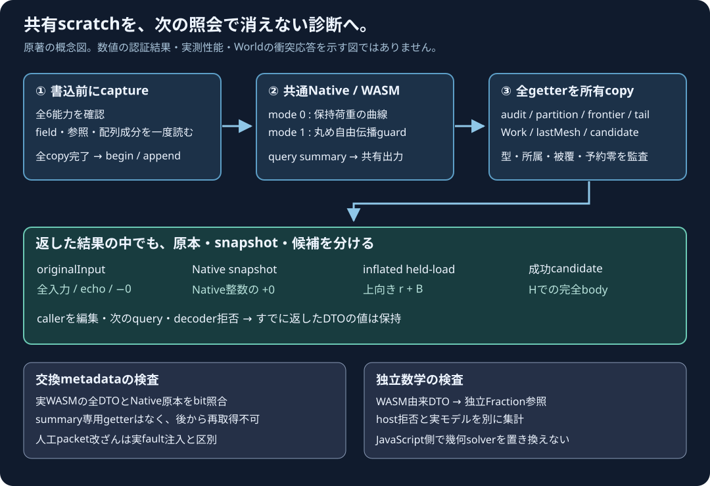

HELD LOAD / FREE FLIGHT GUARD / FIXED INPUT PROOF
曲線と丸め伝播の診断を、
次の照会の後にも保持する。
固定Native原入力2例を公開JavaScript APIで照会し、元入力・全audit・partition・mesh候補と成功candidateを省略せず表示します。距離はm、時間は秒です。
read-only照会です。Worldの時間進行・衝突応答・流体・材料損傷を計算する画面ではありません。入力編集UIは後続です。
共有SDKを準備中。HTTP/HTTPS配信が必要です。
固定原入力の完全JSON
結果の概要
未実行
所有した全結果
未実行
